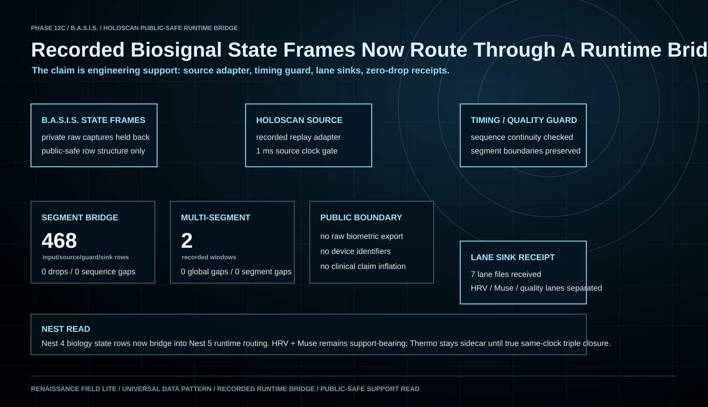

Repeated HRV, RR, and heart-rate windows established a real physiological lane instead of a simulated health-data example.
Complete program arc
From one signal stream to a guarded multimodal state layer.
Muse EEG, optical, motion, reference-quality, environment, range, and same-clock HRV inputs became one source-resolved state packet.
Repeated same-clock capture and recorded Holoscan routing show that named lanes can remain synchronized, quality guarded, and separately reviewable.
Close direct live-device routing, strengthen waveform and artifact QA, then test the system with bounded research and medical-device partners.
What the system does
Capture is only the first step.
Live and recorded sensor lanes enter through adapters that preserve device, unit, sample timing, and source identity.
Packet continuity, motion, contact, reference quality, missingness, and availability stay attached to the measurement.
HRV, EEG, optical, motion, environment, and other inputs can move through named sinks without becoming one opaque score.
Researchers can inspect the source window, condition, quality limits, derived state, and next validation gate together.
Measured support
The current evidence is real, repeated, and deliberately bounded.
15 valid HRV + Muse rows
Five repeated rows each for target, seated-calm control, and drift-control conditions used the same 60 / 120 / 60-second window structure.
Real packet and sample data
The public-safe aggregate includes 98,027 Muse packet rows, 9,750,684 decoded sample rows, and 3,980 HRV observations.
HRV condition separation
HRV produced the strongest current condition read. EEG remains a measured candidate surface that still requires stricter artifact masks.
480 routed events, no observed gaps
The closed append-only gate reconciled expected, source, guard, and sink events across eight named lanes with zero observed drops or sequence gaps.
Live proof surface
The capture system is already operating.
The live console brings Muse packets, MoFit HRV/RR, device intake, stream auditing, quality labels, and evidence-packet preparation into one B.A.S.I.S. workspace.

Runtime bridge
Recorded state frames can move through guarded streaming infrastructure.
The public-safe Holoscan gate routes recorded HRV and Muse-derived state frames through a source adapter, timing and quality guard, and lane-separated sinks. The result is engineering evidence for a streaming architecture—not a clinical performance claim.

Integration direction
Designed to connect without replacing the systems already in place.
Research and medical-device workflow
- FHIR and SMART on FHIR are intended integration paths, not deployed certification claims
- Named observations, device context, quality, and evidence packets remain reviewable
- Local, edge, private-cloud, and customer-controlled deployment patterns remain available
Expandable signal surface
- Current support centers on MoFit HRV/RR and Muse EEG, optical, and motion lanes
- ECG, PPG/SpO2, blood pressure, respiration, sleep, EDA/GSR, CGM, and laboratory feeds are adapter directions
- Each new device requires its own timing, quality, calibration, and validation gate

Evidence boundary
Current support: synchronized capture, state framing, and recorded runtime routing.
B.A.S.I.S. does not currently claim diagnosis, treatment, clinical validation, medical-device clearance, population-level performance, or live hospital deployment. Temperature remains an auxiliary continuation lane. Direct live Muse / MoFit routing into the guarded runtime is the next engineering gate.
Next gate
Run direct live-device source-on and source-off sessions, verify sample timing and quality masks, preserve lane receipts, and return only public-safe aggregate evidence.
Partner action
Review the B.A.S.I.S. demo path.
Medical-device, research, sports, rehabilitation, and clinical-workflow teams can review the current capture surface and define one bounded integration or validation lane.